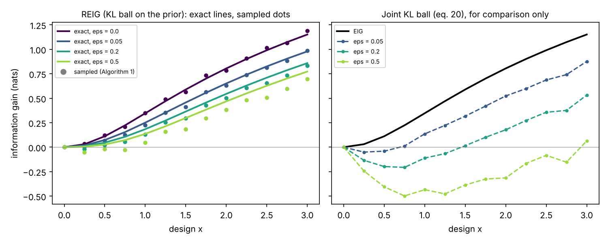
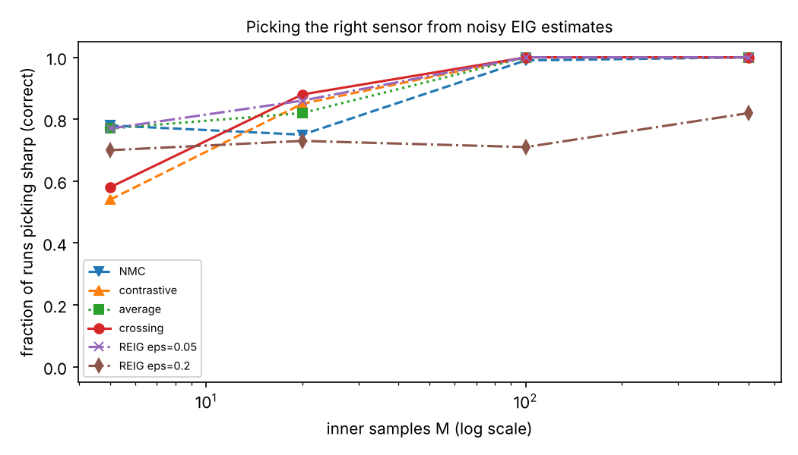
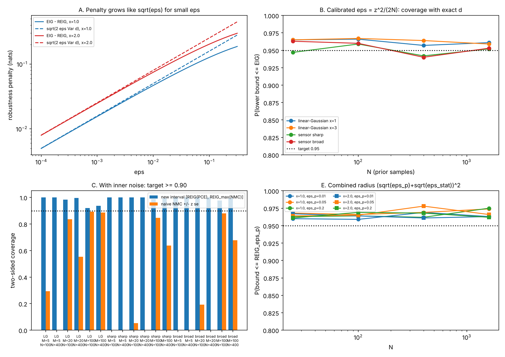
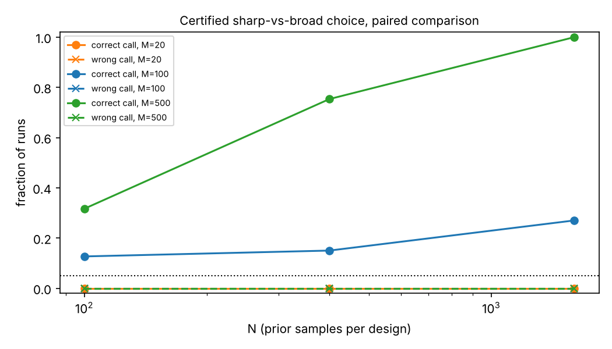
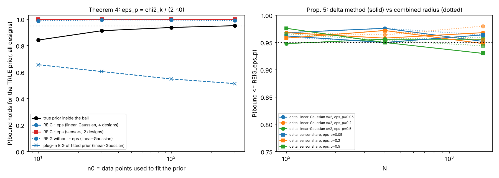

Draft. First version written Nov 19, 2026. Numbers come from the scripts in this repository and may change as we add seeds and models. Sections marked [TODO] still need the team's input.
Robust expected information gain (REIG) scores an experiment by its worst case over priors within a KL ball of radius $\varepsilon$, but gives no rule for choosing $\varepsilon$. On three small models with closed-form checks or numerical reference calculations, we find that (i) $\varepsilon$ is entangled with estimator noise, (ii) REIG's tangent approximation can both hide sensitivity and expose non-Gaussian worst cases, (iii) REIG's design switch in a two-sensor problem is confirmed for the true worst case by bracketing it with the paper's own bound, and (iv) a simple rule that pairs an over- and an under-estimating EIG estimator picks a radius from the data and gives the most accurate EIG estimates we tried. Most importantly, (v) we give a principled answer to one of the two jobs $\varepsilon$ does: choosing $\varepsilon = z_{1-\alpha}^2/(2N)$ turns REIG into a calibrated confidence bound for EIG, which yields confidence intervals and certified design choices that stay valid at any inner sample size. All results come from one-dimensional toy models. Finally, (vi) we prove these results and settle the prior part under a stated model: if the prior was fitted from $n_0$ data points with $k$ parameters, $\varepsilon_p=\chi^2_k/(2n_0)$ gives a guarantee under the true prior for all designs at once, and we prove that without some information about the prior's error no rule can carry a guarantee.
1Problem and motivation
Bayesian experimental design picks the experiment that is expected to teach us the most. The usual score is the expected information gain (EIG): how much, on average, the experiment's outcome $y$ will shrink our uncertainty about an unknown parameter $\theta$. For a prior $p(\theta)$, likelihood $p(y\mid\theta,\xi)$ and design $\xi$,
$$ I(p,\xi) \;=\; \mathbb{E}_{p(\theta)}\Big[\,\mathrm{KL}\big(p(y\mid\theta,\xi)\,\big\|\,p(y\mid\xi)\big)\Big]. $$The catch is that EIG is computed under the prior, and priors are often chosen for convenience. If the prior is a little wrong, the ranking of experiments can change. EIG is also usually estimated by nested Monte Carlo, and sampling error acts much like a perturbed prior.
Go and Isaac [1] proposed robust EIG (REIG): score each design by its worst case over all priors $q$ within a KL ball of radius $\varepsilon$ around $p$. Their approach is elegant and cheap to compute, but it leaves one number open. How large should $\varepsilon$ be? Too small and REIG is just EIG. Too large and every design looks bad, and the method becomes overly cautious. The authors say directly that "a definite a priori estimate for $\varepsilon$ seems unlikely in most cases" and suggest, as future work, tying $\varepsilon$ to the error of the sampling estimator.
That is our question. We do not solve it in general. Instead we (a) build small models with closed-form checks or numerical reference calculations, (b) map out how $\varepsilon$ interacts with estimator noise and with the design decision, and (c) test one concrete calibration rule.
2Background: what REIG actually computes
The true worst case $\inf_{q\in A(\varepsilon,p)} I(q,\xi)$, with $A(\varepsilon,p)=\{q : \mathrm{KL}(q\,\|\,p)\le\varepsilon\}$, is hard: EIG is concave in $q$, so minimizing it over a convex set can have many local minima. Go and Isaac [1] replace EIG with its tangent (affine) approximation at $p$ and minimize that instead. Writing
$$ d(\theta) \;=\; \mathrm{KL}\big(p(y\mid\theta,\xi)\,\big\|\,p(y\mid\xi)\big) \;\ge 0 , $$By convex duality [4], REIG becomes a one-dimensional convex problem (their eq. 18):
$$ I_\varepsilon(p,\xi) \;=\; -\inf_{\lambda\ge 0}\Big\{\lambda\varepsilon + \lambda\log \mathbb{E}_{p(\theta)}\big[e^{-d(\theta)/\lambda}\big]\Big\}. $$Three facts matter for us:
- The KL ball is on the prior of $\theta$ only. The likelihood is held fixed.
- REIG sits between EIG and the true worst case, $I(p)\ge I_\varepsilon \ge I^{\text{true}}_\varepsilon$, and is within $\varepsilon$ of the true worst case.
- With samples $d_1,\dots,d_N$, REIG is a "log-sum-exp" reweighting that leans toward the smallest $d_i$ as $\varepsilon$ grows (their Algorithm 1). At large $\varepsilon$ it approaches $\min_i d_i$.
3Methodology
3.1Models where we know the answer
- Linear-Gaussian. $\theta\sim N(0,1)$, $y\mid\theta\sim N(x\theta,1)$. EIG, $d(\theta)$ and even REIG have closed forms, so we can measure the exact error of any estimator.
- Two blood tests (the paper's own example). A binary condition and two tests with the same EIG at a 50% prior. Everything is exact.
- Sharp vs broad sensor (new). $\theta\sim N(0,1)$, $y\sim N(\tanh((\theta-c)/w),\,0.05^2)$. A sharp sensor ($w=0.5$) is precise near zero but saturates in the tails; a broad one ($w=2.5$) is less precise but works over a wider range. We computed all values on a fine grid, so there is no sampling noise. This is the first model we found where the best design changes with $\varepsilon$.
3.2Estimators
- Nested Monte Carlo (NMC) [5]: estimates $p(y)$ with $M$ prior samples. For finite $M$ it over-estimates EIG in expectation.
- Contrastive (as in ACE/PCE [3]): also includes the true $\theta_i$ when estimating $p(y)$. For finite $M$ it under-estimates EIG in expectation.
- REIG: Algorithm 1 of the paper, with $N_1$ prior samples and $N_2$ outcomes per sample.
3.3A calibration rule to test
Following the paper's suggestion, we tested this rule: apply the robust minimum (REIG) to the over-estimating NMC samples and the robust maximum (their eq. 19) to the under-estimating contrastive samples. As $\varepsilon$ grows, the two estimates move toward each other. Pick $\varepsilon^*$ where they meet, and use that common value as the estimate. The data choose the radius, but the crossing point need not equal the true EIG; how close it lands is an empirical question we test below.
4AI-assisted research process
We used AI throughout, and we treated every AI output as a claim to check, not a result. Our loop was:
- Generate. An AI assistant (Claude) wrote most of the code and ran the experiments.
- Check against something independent. Closed-form answers, the paper's equations, the paper's own numbers, and physical sense (information can't be negative).
- Get a second opinion. A second AI model reviewed the code, the first model's pasted reasoning and the results, and re-ran the experiments.
- Reproduce. Every script runs from a fixed seed. The experiments were first run in the AI's cloud workspace and then re-run on a team member's laptop, with identical numbers.
- Log it. Each session is recorded in
ai_log/: what was asked, what came back, how it was checked, and what changed.
What the checks caught
- A wrong definition. The first REIG implementation put the KL ball on the joint distribution of $(\theta,y)$ instead of on the prior. It ran fine but gave negative information gain. Reading the paper showed this was a different, more conservative criterion (their eq. 20).
- Overclaiming. The second AI flagged that our README blurred REIG with the true worst case, and that one explanation of a result ("the smallest estimate is the noisiest") was not supported. Both were fixed.
- A refactoring bug. A sign error appeared only at $\varepsilon=0$. We caught it because a baseline error jumped from 0.04 to 1.18 between runs.
- Claims wider than the evidence. A second review pointed out that our regret result covered only the priors we tested, that a "bound check" did not by itself establish the true worst case, that "right sensor" in one experiment meant "best under the nominal prior", and that two experiments used different fallback rules for the same method. All four were fixed, and the same review suggested the interval bracketing in Section 5.4.
- A misleading figure. A plot title claimed "the safer choice depends on $\kappa$." The numbers showed the opposite, so the title was changed.
[TODO: each team member adds a sentence on what they checked or did by hand.]
5Results
5.1The implementation matches theory
On the linear-Gaussian model, sampled REIG follows the exact closed form, and the paper's bounds hold everywhere we tested ($I \ge I_\varepsilon$, and $I_\varepsilon$ minus the worst Gaussian-prior EIG stays below $\varepsilon$). The joint-ball variant, by contrast, goes far below zero.

5.2Estimator noise and $\varepsilon$ interact
Because REIG leans toward the smallest $d_i$, noise in each $d_i$ pulls it down. The number of outcomes per $\theta$ ($N_2$) matters much more than the inner sample size $M$. At $\varepsilon=0.5$ and $x=0.5$, the bias was $-0.45$ with $N_2=1$, $-0.12$ with $N_2=5$ and $-0.03$ with $N_2=25$. So the "right" $\varepsilon$ cannot be chosen without knowing the estimator's noise.

5.3REIG can miss sensitivity
In the two-test example both tests have the same EIG at a 50% prior. Both REIG and the true worst case prefer test B for every $\varepsilon>0$, which agrees with the paper's argument. But REIG says test B loses nothing: its line is flat, because B's $d(\theta)$ is the same for both values of $\theta$, so the tangent approximation sees no sensitivity. B's true worst case actually falls from 0.216 to 0.105 nats at $\varepsilon=0.3$. The part REIG drops is exactly the curvature term it approximates away.

5.4...but it can also catch a danger simple checks miss
With the sharp and broad sensors, plain EIG prefers sharp (2.10 vs 1.94 nats). REIG switches to broad between $\varepsilon=0.15$ and $0.2$. If we only consider Gaussian priors (a wrong prior mean or variance), sharp stays best at every radius. But REIG's own worst-case prior for the sharp sensor is two-humped, not Gaussian, and it hurts the sharp sensor much more.
We can do better than compare criteria: we can bracket the true worst case. The paper's bound $|I_\varepsilon - I^{\text{true}}_\varepsilon|\le\varepsilon$ gives a lower end, and the real EIG at any prior we tested gives an upper end. These intervals are tight, and they settle which sensor has the better true worst case at every radius we checked except one:
| $\varepsilon$ | sharp: true worst case in | broad: true worst case in | better worst case |
|---|---|---|---|
| 0.05 | [1.832, 1.835] | [1.756, 1.760] | sharp |
| 0.10 | [1.698, 1.704] | [1.663, 1.669] | sharp |
| 0.15 | [1.587, 1.596] | [1.584, 1.593] | undecided (overlap) |
| 0.20 | [1.488, 1.501] | [1.512, 1.525] | broad |
| 0.30 | [1.310, 1.333] | [1.381, 1.401] | broad |
So, within the accuracy of our grid, REIG's switch is correct: the true worst-case preference really does flip between $\varepsilon=0.1$ and $0.2$. A check using only Gaussian priors would have missed this.
There is a twist. If we measure robustness by regret (how much worse than the best sensor we could do) instead of worst-case EIG, sharp had the lower maximum regret at every radius. This is only over the priors we tested (Gaussian priors plus the two REIG worst-case priors), not a worst case over the whole ball. Still, it shows that REIG answers the max-min question, and that is not the only reasonable notion of "robust."

5.5A data-driven radius
On the linear-Gaussian model with a small inner budget ($M=10$), the crossing rule had an error (RMSE) of 0.061 nats, compared with 0.246 for NMC, 0.115 for the contrastive estimator and 0.099 for their simple average. The chosen $\varepsilon^*$ was small (0 to 0.074) and grew with the strength of the design.

On the sensor model we also asked a narrower question: with noisy estimates, which method picks the sensor with the higher EIG under the reference prior? This tests estimation accuracy, not protection against a wrong prior. The crossing rule never sees the exact answer when it chooses $\varepsilon$. With 100 seeds per budget, the crossing rule's estimates were nearly unbiased from $M=20$ on (errors of 0.01 nats or less), and it picked correctly most often at $M=20$ (88% vs 75% for NMC and 85% for the contrastive estimator). From $M=100$ on, almost every method picks correctly. At the tiniest budget ($M=5$) the crossing rule did worse than NMC (58% vs 78%). NMC's bias there is enormous (+17.5 nats for the sharp sensor), but it happens to favor the sharp sensor, so NMC picks correctly for the wrong reason. An accurate estimate and a correct ranking are not the same thing.

5.6A calibrated radius: a principled answer for sampling noise
Sections 5.2 and 5.5 suggested that $\varepsilon$ has two jobs: protecting against a wrong prior, and absorbing sampling error. The second job turns out to have an exact answer.
Step 1: the penalty is a variance penalty. For small radii, the KL worst case of a mean has a simple expansion, a known result in distributionally robust optimization [7]:
$$ I_\varepsilon \;=\; \mathbb{E}_p[d] \;-\; \sqrt{2\varepsilon\,\mathrm{Var}_p(d)} \;+\; O(\varepsilon). $$We checked this against the closed form in the linear-Gaussian model: for $\varepsilon\le 0.01$ the relative error is under 1% (panel A below).
Step 2: match it to a confidence bound. With $N$ i.i.d. samples $d_1,\dots,d_N$, the usual one-sided lower confidence bound for $\mathbb{E}_p[d]$ is $\bar d - z_{1-\alpha}\,\hat\sigma/\sqrt N$. Setting the two penalties equal gives the radius
$$ \varepsilon_N \;=\; \frac{z_{1-\alpha}^2}{2N}, \qquad\text{e.g. } \varepsilon_N \approx 0.0027 \text{ for } N=500,\ \alpha=0.05. $$With this radius, REIG computed from samples is a $(1-\alpha)$ lower confidence bound for EIG. This makes precise the idea Go and Isaac sketch in their Section 8, sizing the ambiguity set to match the estimator's error. It also explains why a fixed radius like $0.05$ behaves badly: the right radius shrinks like $1/N$.
Step 3: handle inner-sample bias. Nested estimators are biased when the inner budget $M$ is small: NMC upward, the contrastive (PCE) estimator downward, both in expectation. Apply the calibrated radius to each, in the direction that only adds caution:
$$ \Big[\; I_{\varepsilon_N}\big(d^{\text{PCE}}\big),\;\; I^{\max}_{\varepsilon_N}\big(d^{\text{NMC}}\big) \;\Big]. $$Each side errs in the safe direction, so this interval should cover EIG with probability at least about $1-2\alpha$ for any $M$. This needs independent inner samples for each $\theta_i$, so that the $d_i$ are i.i.d.; our earlier experiments shared them, and we changed that here.
Step 4: combine with prior uncertainty. If the user also wants robustness to a prior error of size $\varepsilon_p$, the first-order penalties add as $\sqrt{2V}\,(\sqrt{\varepsilon_p}+\sqrt{\varepsilon_N})$, which suggests the combined radius
$$ \varepsilon_{\text{total}} \;=\; \big(\sqrt{\varepsilon_p} + \sqrt{\varepsilon_N}\big)^2 . $$Tests. Every claim was tested on models where the truth is known, with fixed seeds:
| Claim | Target | Result |
|---|---|---|
| Calibrated REIG is a lower bound for EIG (exact $d$, $N$ = 25 to 1600, 4 designs, 1000 runs each) | 95% | 94.0% to 96.7% |
| Same, with a fixed $\varepsilon = 0.05$ | 95% | 94% to 100%, but up to 7× further below the truth at large $N$ |
| Interval covers EIG with inner noise ($M$ = 5, 20, 100; 18 settings, 300 runs each) | ≥ 90% | 92.0% to 100% |
| Naive NMC $\pm z\,$se interval, same settings | ≥ 90% | 0% to 89% |
| Combined radius bounds $I_{\varepsilon_p}$ ($\varepsilon_p$ = 0.01, 0.05, 0.2; linear-Gaussian) | 95% | 95.9% to 97.8% |
| Plugging in $\varepsilon_p$ alone, same test | 95% | 46% to 57% |

Decisions. The point of EIG is choosing a design. Separate intervals for the two sensors were too wide to ever tell them apart. Bounding the difference instead, with both sensors sharing the same random draws, works: we declare "sharp is better" only if the calibrated lower bound of $d^{\text{PCE}}_{\text{sharp}} - d^{\text{NMC}}_{\text{broad}}$ is positive. Across 2,700 runs it never declared the wrong sensor. With $M=500$ and $N=1600$ it declared the right one in every run; with $M\le 20$ it never declared either, because the inner bias is larger than the true gap of 0.153 nats. It stays silent rather than guess.

Where it is weaker. Coverage for the sharp sensor, whose $d(\theta)$ is the most skewed, dips to 94.0% at $N=400$; the guarantee is asymptotic and heavy skew slows it. For the Gaussian models coverage sits slightly above 95%, because the $O(\varepsilon)$ term makes the bound a little conservative. When $M$ is very small the interval is valid but very wide (29 nats for the sharp sensor at $M=5$): it honestly reports that the inner estimates are poor.
6Theory: a complete answer, under a stated model of the prior error
The experiments suggested an answer. This section states it as theorems, proves them, and says exactly where each one was checked. The short version:
- Sampling error. With $N$ prior samples, use $\varepsilon_N = z_{1-\alpha}^2/(2N)$. Then sampled REIG is a calibrated $(1-\alpha)$ lower bound for EIG (Theorem 2), and the PCE/NMC version is a valid interval for any inner budget $M$ (Theorem 3).
- Prior error. If the prior was fitted from $n_0$ data points with $k$ parameters, use $\varepsilon_p = \chi^2_{k,1-\alpha}/(2n_0)$. Then $I_{\varepsilon_p}(\hat p,\xi)-\varepsilon_p$ is a lower bound on the EIG under the true prior, for all designs at once (Theorem 4).
- No free lunch. If nothing is known about how wrong the prior might be, no rule for $\varepsilon_p$ can come with a guarantee (Proposition 6). The radius then expresses belief, and Theorem 4 gives a way to state it: "my prior is worth $n_0$ observations" means $\varepsilon_p=\chi^2_k/(2n_0)$.
Throughout, $d(\theta)=\mathrm{KL}(p(y\mid\theta,\xi)\,\|\,p(y\mid\xi))$, $\mu=\mathbb{E}_p[d]=I(p,\xi)$, $\sigma^2=\mathrm{Var}_p(d)>0$, and $I_\varepsilon(p)=\inf\{\mathbb{E}_q[d]:\mathrm{KL}(q\|p)\le\varepsilon\}$, which is Go and Isaac's REIG [1].
If $|d-\mu|\le B$, there are constants $C,\varepsilon_0$ depending only on $B$ and $\sigma$ such that for $0<\varepsilon\le\varepsilon_0$,
$$ \Big|\,I_\varepsilon(p)-\big(\mu-\sigma\sqrt{2\varepsilon}\,\big)\Big| \;\le\; C\varepsilon . $$More precisely, $I_\varepsilon(p)=\mu-\sigma\sqrt{2\varepsilon}+\dfrac{\kappa_3}{3\sigma^2}\,\varepsilon+O(\varepsilon^{3/2})$, where $\kappa_3=\mathbb{E}_p[(d-\mu)^3]$.
In plain words: Making the result robust costs about $\sigma\sqrt{2\varepsilon}$: the spread of the per-sample information gain, times the square root of the radius.
Proof
Let $\psi(t)=\log\mathbb{E}_p e^{-t(d-\mu)}$. Since $|d-\mu|\le B$, Taylor's theorem gives $\big|\psi(t)-\sigma^2t^2/2\big|\le B^3t^3e^{Bt}/6$ and a similar bound for $\psi'$.
Lower bound. The Gibbs (Donsker–Varadhan) inequality says $\mathbb{E}_q[f]\le \mathrm{KL}(q\|p)+\log\mathbb{E}_p e^{f}$ for every $q\ll p$. Take $f=-d/\lambda$: for every feasible $q$ and every $\lambda>0$, $\mathbb{E}_q[d]\ge\mu-\lambda\psi(1/\lambda)-\lambda\varepsilon$. Choose $\lambda=\sigma/\sqrt{2\varepsilon}$: the main terms give $\mu-\sigma^2/(2\lambda)-\lambda\varepsilon=\mu-\sigma\sqrt{2\varepsilon}$, and the remainder is at most $\lambda B^3e^{B/\lambda}/(6\lambda^3)=O(\varepsilon)$.
Upper bound. The exponential tilt $q_t\propto p\,e^{-td}$ has $\mathbb{E}_{q_t}[d]=\mu-\psi'(t)$ and $\mathrm{KL}(q_t\|p)=t\psi'(t)-\psi(t)$, which rises continuously from $0$. Pick $t^*$ with $\mathrm{KL}=\varepsilon$. Expanding, $t^*=\sqrt{2\varepsilon}/\sigma+O(\varepsilon)$ and $\mathbb{E}_{q_{t^*}}[d]=\mu-\sigma\sqrt{2\varepsilon}+O(\varepsilon)$. Since $q_{t^*}$ is feasible, $I_\varepsilon(p)$ is at most this.
The tilt is in fact the exact minimizer (it is the dual's solution, with $t=1/\lambda^*$), so expanding it further gives the exact series. We did that symbolically (Exp 10) and found the second-order coefficient $\kappa_3/(3\sigma^2)$. Against the linear-Gaussian closed form, the first-order error at $\varepsilon=0.01$ is $5.2\times10^{-3}$; with the second-order term it drops to $9.1\times10^{-5}$. $\square$
Let $d_1,\dots,d_N$ be i.i.d. with the distribution of $d(\theta)$, $\theta\sim p$, bounded as above, and let $\hat I=I_{\varepsilon_N}(\hat P_N)$ be REIG of their empirical distribution with $\varepsilon_N=z_{1-\alpha}^2/(2N)$. Then
$$ \Pr\big(\hat I\le I(p,\xi)\big)\;\longrightarrow\;1-\alpha \qquad (N\to\infty). $$In plain words: With radius $z^2/(2N)$, REIG is a 95% lower bound for the true EIG. No tuning is needed.
Proof
Apply Theorem 1 to $\hat P_N$. Its range is at most $2B$, and its standard deviation $\hat\sigma\to\sigma$ almost surely, so on the event $\hat\sigma\ge\sigma/2$ (whose probability tends to one) the constants are uniform. This gives $\hat I=\bar d-\hat\sigma\sqrt{2\varepsilon_N}+O(\varepsilon_N)=\bar d-z_{1-\alpha}\hat\sigma/\sqrt N+O(1/N)$. Hence $\Pr(\hat I\le\mu)=\Pr\big(\sqrt N(\bar d-\mu)/\hat\sigma\le z_{1-\alpha}+O(N^{-1/2})\big)\to\Phi(z_{1-\alpha})=1-\alpha$ by the central limit theorem and Slutsky's lemma. $\square$
This is a special case of the general theory of Duchi, Glynn and Namkoong [7], who prove calibrated coverage for $f$-divergence balls (their radius $\rho/n$ with $f''(1)=2$ converts to ours). Boundedness can be relaxed to finite exponential moments near zero, as for the linear-Gaussian model. Checked in Exp 07B: coverage 94.0–96.7% against a 95% target.
Let $d^{\rm L}_i$ be i.i.d. contrastive (PCE) terms and $d^{\rm U}_i$ i.i.d. nested Monte Carlo terms, each with its own $M\ge1$ inner samples. Then
$$ \Pr\Big(I_{\varepsilon_N}(\hat P^{\rm L}_N)\;\le\;I(p,\xi)\;\le\;I^{\max}_{\varepsilon_N}(\hat P^{\rm U}_N)\Big)\;\ge\;1-2\alpha-o(1). $$In plain words: Even when each inner estimate is poor, the interval still contains the true EIG. A poor estimate only makes the interval wider.
Proof
For every $M$, $\mathbb{E}[d^{\rm L}]\le I(p,\xi)\le\mathbb{E}[d^{\rm U}]$. The left inequality is the PCE lower bound of Foster et al. [3]. The right one is Jensen's inequality: the inner average is an unbiased estimate of $p(y\mid\xi)$, so the expected log of it is at most $\log p(y\mid\xi)$. Therefore $\Pr\big(I_{\varepsilon_N}(\hat P^{\rm L}_N)>I(p,\xi)\big)\le\Pr\big(I_{\varepsilon_N}(\hat P^{\rm L}_N)>\mathbb{E}[d^{\rm L}]\big)\to\alpha$ by Theorem 2, and the same for the upper side with the robust maximum. A union bound finishes the proof. $\square$
The independence of the inner samples matters: shared inner samples make the $d_i$ dependent. Checked in Exp 07C: coverage 92–100% in all 18 settings, including $M=5$, against 0–89% for the usual interval.
Let $\{p_\eta:\eta\in\mathbb{R}^k\}$ be a regular parametric family, let the true prior be $q=p_{\eta_0}$, and let $\hat p=p_{\hat\eta}$ be its maximum-likelihood fit from $n_0$ i.i.d. observations. With $\varepsilon_p=\chi^2_{k,1-\alpha}/(2n_0)$,
$$ \Pr\Big(\;I(q,\xi)\;\ge\;I_{\varepsilon_p}(\hat p,\xi)-\varepsilon_p\;\;\text{for every design }\xi\Big)\;\ge\;1-\alpha-o(1). $$In plain words: If you fitted your prior from $n_0$ data points, use radius $\chi^2_k/(2n_0)$. Then you get a guaranteed lower bound on what each design gives under the real prior.
Proof
Step 1: the ball contains the true prior. With $\Delta=\hat\eta-\eta_0$, $\mathrm{KL}(p_{\eta_0}\|p_{\hat\eta})=\tfrac12\Delta^\top F(\eta_0)\Delta+o(\|\Delta\|^2)$, where $F$ is the Fisher information, and $n_0\,\Delta^\top F\Delta\to\chi^2_k$ in distribution [8]. So $\Pr\big(\mathrm{KL}(q\|\hat p)\le\varepsilon_p\big)\to1-\alpha$.
Step 2: on that event the bound holds for every design. Go and Isaac's identity (their eq. 10) holds for any reference: $I(q,\xi)=I_{\rm aff}(q,\xi;\hat p)-\mathrm{KL}(q(y\mid\xi)\,\|\,\hat p(y\mid\xi))$. By the data-processing inequality the last KL is at most $\mathrm{KL}(q\|\hat p)\le\varepsilon_p$. Since $q$ is in the ball, $I_{\rm aff}(q,\xi;\hat p)\ge I_{\varepsilon_p}(\hat p,\xi)$. Together: $I(q,\xi)\ge I_{\varepsilon_p}(\hat p,\xi)-\varepsilon_p$. The event in Step 1 does not involve $\xi$, so the bound holds for all designs at once. $\square$
A consequence: the design that maximizes $I_{\varepsilon_p}(\hat p,\xi)-\varepsilon_p$ comes with a certificate for its performance under the true prior. Checked in Exp 09A: the bound held for all designs in 99.7–100% of runs; using the fitted prior's plain EIG held in only 3.5–66%. The bound is conservative, and the ball contained the true prior in 84% of runs at $n_0=10$, rising to 95% at $n_0=300$, as expected for an asymptotic result.
For fixed $\varepsilon_p>0$ with a unique dual solution $\lambda^*$, let $w=e^{-d/\lambda^*}/\mathbb{E}_p e^{-d/\lambda^*}$ be the worst-case likelihood ratio. Then $\sqrt N\big(I_{\varepsilon_p}(\hat P_N)-I_{\varepsilon_p}(p)\big)\to N\big(0,\lambda^{*2}\mathrm{Var}_p(w)\big)$, so $I_{\varepsilon_p}(\hat P_N)-z_{1-\alpha}\hat\lambda\,\widehat{\mathrm{sd}}(\hat w)/\sqrt N$ is an asymptotic $(1-\alpha)$ lower bound for $I_{\varepsilon_p}(p)$.
In plain words: You can add sampling error on top of a chosen prior radius with an ordinary standard error. Our earlier rule of thumb is the simple version of this.
Proof sketch
$I_{\varepsilon_p}(P)=\sup_\lambda\{-\lambda\log\mathbb{E}_Pe^{-d/\lambda}-\lambda\varepsilon_p\}$. By the envelope theorem its derivative in the direction $\delta_x-P$ is $-\lambda^*(w(x)-1)$, which is its influence function. Hadamard differentiability (as in [7]) and the functional delta method give the limit. As $\varepsilon_p\to0$, $\lambda^*\mathrm{sd}(w)\to\sigma$ and the bound reduces to Theorem 2. Our earlier rule $\varepsilon_{\rm total}=(\sqrt{\varepsilon_p}+\sqrt{\varepsilon_N})^2$ is its first-order version. Checked in Exp 09B: coverage 93.0–97.6% (delta method) and 94.4–98.0% (combined radius), with nearly identical gaps. $\square$
Suppose everything the designer observes (samples from $p$, the likelihood, simulator outputs) has a distribution that does not depend on the true prior $q$. Then for any rule $\hat\varepsilon$ and any $\delta>0$ there is a true prior $q$ with $\Pr\big(\mathrm{KL}(q\|p)\le\hat\varepsilon\big)<\delta$.
In plain words: Simulation alone cannot tell you how wrong your prior is, so no rule based on simulation alone can choose the prior radius.
Proof
The law of $\hat\varepsilon$ is the same whatever $q$ is, so there is a constant $c$ with $\Pr(\hat\varepsilon>c)<\delta$. The divergence $\mathrm{KL}(q\|p)$ is unbounded over priors $q\ll p$ (shift the mean far enough), so choose $q$ with $\mathrm{KL}(q\|p)>c$. Then $\Pr(\mathrm{KL}(q\|p)\le\hat\varepsilon)\le\Pr(\hat\varepsilon>c)<\delta$. $\square$
This is why the prior part of the question cannot be answered from simulation alone, and why Go and Isaac found that "a definite a priori estimate for $\varepsilon$ seems unlikely." Information about the prior's error has to come from somewhere. Theorem 4 handles the case where it comes from data.

7Discussion and conclusions
What we learned:
- $\varepsilon$ has two jobs. It is meant to cover prior misspecification, but in practice it also absorbs estimator noise, and the two pull in different directions. A radius that is sensible for the prior can be far too aggressive for a noisy estimator.
- The tangent approximation cuts both ways. It can hide sensitivity completely (two-test example), and it can also reveal non-Gaussian worst cases that a "wrong mean or variance" check misses (sensor example).
- REIG's switch can be verified. Bracketing the true worst case with the paper's bound gave intervals tight enough to confirm REIG's design choice at every radius but one.
- "Robust" needs a definition. Maximizing the worst-case EIG and minimizing regret (over the priors we tested) chose different sensors in the same problem.
- Half of the open question has a principled answer. For sampling error, the radius should be $z^2/(2N)$, not a fixed number. It turns REIG into a confidence bound, makes the paper's two-estimator idea into an interval with guaranteed coverage, and supports design choices that refuse to guess. For prior error, Section 6 gives a rule with a guarantee when the prior was fitted from data, and proves that no rule can have a guarantee without some information about the prior's error. In that sense the question is answered: $\varepsilon$ is determined by what you know about your samples and your prior, and by nothing else.
- Pairing an over- and under-estimator gives a usable radius. The crossing rule gave the most accurate EIG estimates we tried on our toy problems, which supports the paper's suggestion. A more accurate estimate did not always mean a better design choice, though (Section 5.5, $M=5$).
Limitations:
- All models are small and one-dimensional in $\theta$. We have not tested the paper's own benchmarks (A/B test, preference, pharmacokinetic).
- The true worst case is only bracketed, not computed, in the sensor model, and all sensor values rely on a numerical grid.
- The crossing rule has no theory yet; the calibrated interval of Section 5.6 is the principled replacement.
- Theorems 2–4 are asymptotic and assume bounded (or light-tailed) $d$ and a correctly specified parametric family for the prior; Theorem 4's bound is conservative in practice. Proofs were checked numerically and, for the expansion, symbolically; they were not formally verified (for example in Lean).
- The calibrated radius is an asymptotic result. Coverage was slightly below target (94%) for the most skewed model at moderate $N$, and the combined radius for prior plus sampling error is a first-order rule tested only on the linear-Gaussian model.
Future directions:
- Test the crossing rule on the paper's benchmarks and with learned (variational) estimators.
- A finite-sample version of the calibrated radius (for example via a bootstrap) for skewed $d(\theta)$.
- Eliciting $\varepsilon_p$ for subjective priors, for example from disagreement between experts or an "effective sample size" for the prior, which Theorem 4 turns into a radius.
- Using the second-order term $\kappa_3\varepsilon/(3\sigma^2)$ to correct coverage for skewed $d(\theta)$.
- Compare REIG with regret-based robust design on problems with many candidate designs.
References
- J. Go and T. Isaac. Robust expected information gain for optimal Bayesian experimental design using ambiguity sets. UAI, PMLR 180:728–737, 2022. arXiv:2205.09914
- A. Foster, M. Jankowiak, E. Bingham, P. Horsfall, Y. W. Teh, T. Rainforth and N. Goodman. Variational Bayesian optimal experimental design. NeurIPS, 2019.
- A. Foster, M. Jankowiak, M. O'Meara, Y. W. Teh and T. Rainforth. A unified stochastic gradient approach to designing Bayesian-optimal experiments. AISTATS, 2020.
- A. Shapiro. Distributionally robust stochastic programming. SIAM Journal on Optimization, 27(4), 2017.
- K. J. Ryan. Estimating expected information gains for experimental designs with application to the random fatigue-limit model. Journal of Computational and Graphical Statistics, 12(3), 2003.
- A. Krause and J. Hübotter. Probabilistic Artificial Intelligence. arXiv:2502.05244, 2025.
- J. C. Duchi, P. W. Glynn and H. Namkoong. Statistics of robust optimization: a generalized empirical likelihood approach. Mathematics of Operations Research, 46(3):946–969, 2021. arXiv:1610.03425
- A. W. van der Vaart. Asymptotic Statistics. Cambridge University Press, 1998.